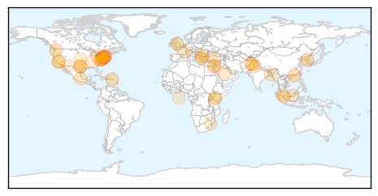
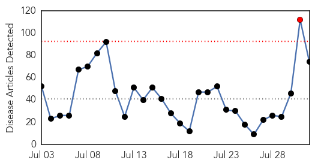
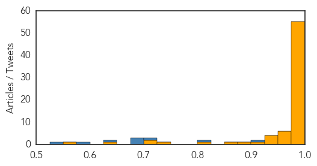

Unknown
30-Day Web Trend
30-Day Twitter Trend
0 alerts, 0 warnings

Article Locations

Article Confidences

Top Articles:
- 0.998
- (LEAD) S. Korea's MERS cases, fatalities remain flat
- 0.989
- Bronx Residents Anxious After 4th Death From Legionnaires’ Disease
- 0.989
- 4th Person Dies In South Bronx Outbreak « CBS New York
- 0.988
- Toll from Bronx outbreak of Legionnaires' Disease climbs
- 0.983
- 4th Death in "Unusual" Legionnaires' Outbreak in NYC: Health Officials
- 0.979
- Outbreak Of Legionnaires' Disease Has Infected 31 People, k!lled 2 In NYC
- 0.972
- Texas, Wisconsin and Georgia Restaurants Link in 26 State Cyclospora Outbreak
- 0.952
- Hong Kong ends travel warning against South Korea after country deemed Mers-free
- 0.947
- Salmonella outbreak that may be tied to pork grows
- 0.941
- CDC Coming to Washington to Help in 90 Person Salmonella Outbreak
- 0.917
- Chicago Tribune
- 0.917
- Chicago Tribune
- 0.896
- Americas declared rubella, measles free
- 0.890
- Salmonella outbreak linked to pork expands to 90 cases
- 0.888
- Salmonella outbreak linked to pork increases to 90 cases
- 0.851
- No isolation wards: Congo virus poses threat to K-P
- 0.783
- E. coli found in Los Altos water indicated breach, but only low risk
- 0.781
- Legionella Discovered. No Concern
- 0.763
- Bulgaria veterinary authorities continue work to tackle brucellosis outbreak (ROUNDUP)
- 0.746
- BP Calls for Inspections After Third Legionnaires' Death in The Bronx
- 0.725
- East African news, Headlines, Business, Tourism, Sports, Health, Entertainment, Education
- 0.722
- CDC Update: 384 Cyclospora Cases in 26 States Linked to Cilantro
- 0.707
- Texas A&M entities helping understand, monitor Chagas disease
- 0.705
- Kenya : State warns over foot and mouth disease
- 0.690
- Dont worry , be horny!
- 0.683
- State to hold hearings on HPV vaccinations
- 0.677
- Clashes break out in West Bank after toddler’s death
- 0.677
- Paris makes rent cap regulations a reality
- 0.677
- Palestinian teen killed in West Bank clashes with Israeli army
- 0.677
- Plane debris arrives in France for MH370 link investigation
- 0.677
- Barzani asks PKK to quit Iraqi Kurdish enclave
- 0.677
- Bin Laden relatives killed in private jet crash in England
- 0.677
- Taliban’s new leader Mullah Mansour calls for unity
- 0.668
- Another gastro death in city finally wakes up MC
- 0.658
- Arsenic mitigation units to protect 26,000 people
- 0.634
- Grace Runs to Singapore while Zimbabwean Women are Raped by Prophets
- 0.591
- WHO and sailing body seek virus tests in Rio Olympic venues
- 0.585
- Drivers on rural roads face many hazards
- 0.565
- Hospital infection program already producing results; 6 Northeast Ohio hospitals penalized
- 0.544
- Death toll due to heavy rains in Gujarat reaches 40
- 0.541
- Swaziland shows signs of turning corner on world's highest HIV rates
- 0.540
- A Killer on the Loose
- 0.538
- Cold and flu lasting longer than usual this year
- 0.508
- USDA girds for possible bird flu return this fall
- 0.501
- Polio vaccination kicks off in 32 high risk counties
- 0.501
- 53 million adults in the US live with a disability
Top Tweets:
-
No tweets found for Aug 01, 2015
Ebola
30-Day Web Trend
1 alerts, 0 warnings

30-Day Twitter Trend
0 alerts, 0 warnings

Article Locations

Article Confidences
Top Articles:
- 1.000
- NYC Doctor, Who Survived Ebola, Says Experimental Vaccine Could Be 'A Way Forward'
- 1.000
- The epidemic's timeline
- 1.000
- First Week With No New Ebola Cases
- 1.000
- Ebola Vaccine 100% Effective During Trial Phase?
- 1.000
- World Health Organization reports progress on Ebola vaccine
- 1.000
- All That You Would Want to Know About the Deadly Ebola Virus Disease
- 1.000
- The Truth About Ebola - By: Jones Nhinson Williams, Founder of the New Liberia Foundation
- 1.000
- Ebola Vaccines Hurdle Tests, Sufferers to See the Light at the End of Tunnel Soon
- 1.000
- Ebola: 500+ Quarantined in Once-Cured Sierra Leone Village
- 1.000
- Ebola outbreak: Guinea health team killed
- 1.000
- Experimental Ebola Vaccine shows Promise
- 0.999
- Experimental Ebola vaccine could stop virus in West Africa
- 0.999
- A newly developed vaccine against the deadly Ebola virus is
- 0.999
- Breakthrough in the quest for Ebola vaccine
- 0.999
- Experimental Ebola vaccine could stop virus in West Africa
- 0.999
- Vaccine against Ebola proves successful during trial in Guinea
- 0.999
- Trials show new Ebola vaccine is ‘highly effective’
- 0.999
- Doctor Who Survived Ebola Says Experimental Vaccine ‘A Way Forward’
- 0.999
- Made-in-Canada Ebola vaccine effective
- 0.999
- Guinea Plans Ebola Inoculation Campaign After Vaccine Success
- 0.999
- NYC Doctor, Who Survived Ebola, Says Experimental Vaccine Could Be 'A Way Forward'
- 0.998
- Ebola vaccine success brings hope for end to threat of deadly virus
- 0.998
- Breakthrough in quest for Ebola vaccine
- 0.998
- Breakthrough in Ebola vaccine
- 0.998
- Ebola vaccine highly effective in Guinea testing; 100% recovery found in people treated quickly
- 0.998
- Ebola vaccine 100% effective; rapid R&D is hailed as a model for other diseases
- 0.998
- Indiablooms - First Portal on Digital News Management
- 0.997
- Ebola vaccine appears to be highly effective, could be 'a game-changer'
- 0.997
- Vaccine Success Holds Hope For End To Deadly Scourge Of Ebola
- 0.997
- It's The Beginning Of The End For Ebola. A Vaccine Successfully Passed A Field Trial In Guinea
- 0.997
- New Ebola Vaccine Kills Virus in Monkeys
- 0.996
- Breakthrough in quest for Ebola vaccine – BorneoPost Online
- 0.996
- Ebola Vaccine Developed With '100 Percent Success Rate'
- 0.996
- GUINEA – Vaccine ‘game-changer’
- 0.996
- New Ebola Vaccine Deemed ‘Highly Effective,’ Says WHO
- 0.995
- Norwegian-lead Ebola vaccine study shows promising results in Guinea
- 0.995
- Vaccine success holds hope for end to deadly scourge of Ebola
- 0.994
- Sierra Leone Welcomes Ebola Vaccine Trial Outcome
- 0.994
- NewLink Genetics : Vaccine success holds hope for end to deadly scourge of Ebola
- 0.993
- Vaccine success holds hope for end to deadly scourge of Ebola
- 0.992
- Ebola vaccine shows 'promising' results
- 0.991
- Ebola Vaccine Is 'Potential Game-Changer'
- 0.990
- Effective Ebola vaccine may be here
- 0.989
- Kenya mulls granting refuge to chimps from Ebola-hit Liberia
- 0.988
- Kenya mulls granting refuge to chimps from Ebola-hit Liberia
- 0.986
- Ebola Vaccine Discovered?
- 0.986
- CDC's top modeler courts controversy with disease estimate
- 0.986
- Ebola Vaccine Shows 100% Efficacy in Trials, the End of the Deadly Virus Could be Near
- 0.986
- CDC’s top modeler courts controversy with disease estimate
- 0.986
- CDC's top modeler courts controversy with disease estimate
Showing top 50 articles...
Top Tweets:
- 0.914
- World Health Organization reports progress on Ebola vaccine - MSNBC http://t.co/WZKwmtY3D4 ebola EVD
- 0.817
- How Sierra Leone's Most Famous Journalist Helped NPR Get The Ebola Story - NPR http://t.co/OV98DcwJJU ebola EVD
- 0.707
- Kenya mulls granting refuge to chimps from Ebola-hit Liberia - Yahoo News http://t.co/LxFwpnUZsu ebola EVD
- 0.680
- One Year Later Emory's Medical Staff Looks Back On The Ebola Crisis - Huffington Post http://t.co/AcoU3RwcF2 ebola EVD
- 0.677
- Experimental Ebola Vaccine Tested in Guinea Shows Promise Report Says - New York Times http://t.co/qiMn4hUz37 ebola EVD
- 0.677
- Experimental Ebola Vaccine Tested in Guinea Shows Promise Report Says - New York Times http://t.co/T5GrZ7HuO2 ebola EVD
- 0.629
- A year later: Was Mecklenburg response to Ebola threat appropriate? - Charlotte Observer http://t.co/LPV6we8v6y ebola EVD
- 0.575
- Experimental Ebola vaccine could stop virus in West Africa study says - http://t.co/d5MGKGg3kf http://t.co/hE3rPjugYa ebola EVD
- 0.547
- RT: Here's a free infographic about Ebola virus disease progress in west Africa. Full PDF here http://t.co/UsLlKSLijB http://t.…